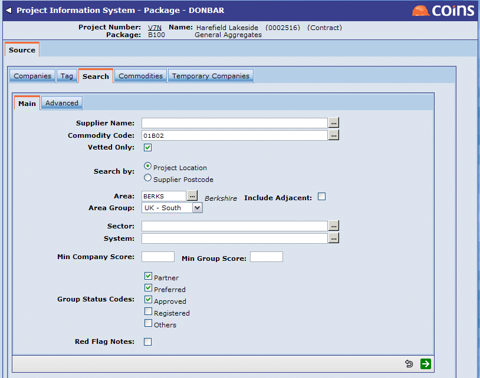

To prepare a mailing list by searching the database:
-
- On the Source tab, click the Search tab.
- In the Capability section, enter the code for the commodity or trade you require.

- In the Area section, select the code for the geographical area you want to search. By default,
NOTE
The area on the project is defined in the Location field on the New Project screen. - Click Search.
-
- Select Add to list from the Choose Action list.
- Click
 to return to the Source screen.
to return to the Source screen.
The offices you selected now appear on the Companies tab.